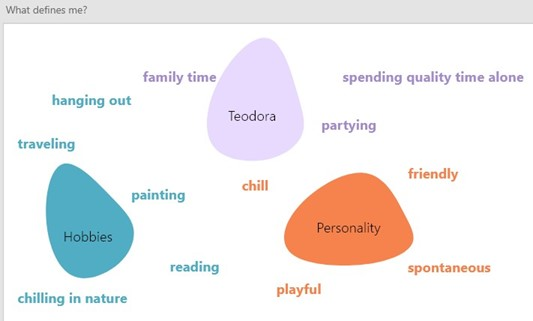

Hi!I'm TeoI am a 19-year-old student at THUAS University,
|
HIGHLIGHTS |
|
|
On the right you can see a list of my personal projects |
|
User Portrait |
|
For this user portrait project,
I used research techniques such as Trading Interview,
Personal Inventory Video and Semantic Differential.
The techniques I used were efficient and I was able
to get the information I was looking for. |
|
I used the Affinity Diagramming
technique in my process of transforming
the raw data into insights.
An affinity diagram, sometimes also known
as a cluster map, is used to organize
information and is the output of affinity mapping.
Affinity diagrams help organize information
into groups of similar items—particularly
useful when analysing qualitative data or observations.
I used all the data cards and I clustered them
based on the information they provided. |
|
|
Procreate Review |
||
For this project I had to review the Procreate app.
I started by talking about the Usefulness with the be,
do and motor goals and then I moved on with the category
of users and the context in which the app will be used.
I rated the usability, engaging and meaning factors on a
scale from one to five, some of the factors were efficiency,
authenticity, flow and competence.
|
 |
|
Although the colour red is missing on their logo,
I wanted to include it in my design, so I used red to
write the title for the conclusion section. Moreover,
I consider that the dark shade of purple will be best
valued as a frame for the whole poster, so, as you can
see in the picture, it highlights and sharpens the entire design.
In the process picture I added below, you can observe how
I was trying to place the colours in different shapes and styles.
My focus was that I wanted to have enough space to write my
reviews but still make it look aesthetically pleasing and
unlike a basic row. The first tries were too messy, but after
some errors, the app’s logo came up again in my mind and inspired
me to design the “rows” alike that splash of colour present in
the logo itself.
|
Thus, you can see how the angles and the dynamics in my row’s design matches the ones in the logo. On each colour section I wrote chunks of text: on the right, one below the other, I wrote my introduction, the usability, engaging and meaning factors’ rating, and on the left, the usefulness factors, the user group and the context. The last pink “row” was left for the conclusions and recommendations section and here I also chose to insert an illustration of a girl that has on a traditional easel a digital tablet. I felt that this drawing illustrates very well both the society that is shifting now from traditional to digital art and also, the app itself, Procreate being an app used mainly for digital painting. |
Personal App |
||
The purpose of this project was to describe myself, my personality and to present the main things that inspires me. I started by creating a mood board and a brainstorm about me and the things I enjoy. As you can see i am a fan of fashion, long trips and making memories with my friends. I am also inspired by nature, plants, organic shapes and warm colours. I love my furry friends and they play a very important role in my life. Those are some things about me that I included in my moodboard. I also included a colour palette made of my favourite colour shades. |
|
 |
|
|  | The other brainstorm technique was focused on the “What defines me” question. I wrote down some general things that defines me. I value very much the time spent with my family, but also I am an introvert person and I like to spend quality time by myself, reading, painting or chilling in nature. On top of that, I am friendly and spontaneous, so I love to hang out, go to parties with my friends and travel with them. |
These are some of the things that defines me, after this step I tried to select some of those things that I consider the most valuable and create a paper low-fi wireframe. I designed the first version of the app on paper in order to be able to make quick changes and modifications before starting to work in a digital environment. |
The final product has information about some things that inspires me, my hobbies, the places I visited and some places that I would love to travel to. For the first page, I chose to keep a simplistic design and put just my name and a minimalistic illustration of a girl that is supposed to look like me. The colour brown was the best match in my opinion for the first background. Once you press the arrow you will see the content page with all the sections that are in my app. |
|